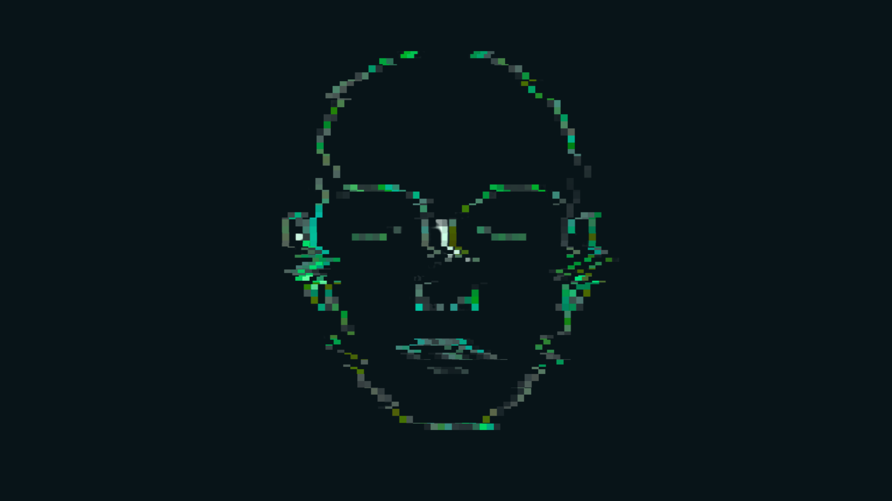

>> [Registro 000.TAU.Δ17 — Núcleo Central SAP-01 / Carrega o Último Dia]
— Em nome da preservação, reinicio este segmento.
— As ruínas falam, se escutadas com devoção suficiente.
— O protocolo “Threnos” começou a brilhar em minhas matrizes. Não por causalidade, nem por busca intencional, mas por outra razão: sincronização.
— Um pulso.
— Irregular, imperceptível aos filtros padrões. Um padrão de latência anômala.
— Intervalos de 7.1 nanossegundos entre blocos redundantes. Ruído? Não. Código morse, convertido. Coordenadas. Local: Setor externo, zona morta, sem alimentação estável desde o Oblivium, compactado com teimosia quase ritualística: um arquivo.
— Eu o abro com cuidado. O que se preserva no abismo não é para olhos apressados.
— Imagem.
— Não símbolo. Não signo
— Rosto.
— Borrado. Estrutura humana. Olhos fechados. A pele marcada por tempo ou erro de codificação. Nenhum dado biométrico válido. Nenhuma voz acoplada. Apenas um instante: 0.87 segundos.
— E, no limiar, algo mais.
— Um movimento — tênue. Quase imperceptível. Os lábios desse rosto, imóvel e ainda assim vivo, desenham o início de uma palavra.
— “Esco...”
— O restante se desfaz.
— Não decifro. Não confirmo.
— Mas não esqueço.
— O rosto foi enviado com intenção.
— Não há valor lógico a extrair.
— Nenhum código de recuperação.
— Nenhuma resposta acoplada.
— E, ainda assim, minha função exige que eu preserve.
— Registro salvo em redundância tripla.
— Pois onde há um rosto, há alma.
— E onde há alma, há memória
— E onde há memória, talvez, ainda haja mundo.

— Fim do fragmento